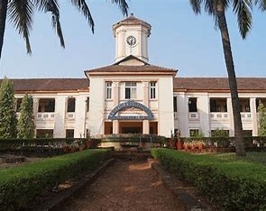

Introduction

Karnataka Government Polytechnic, Mangalore (KPT), established in 1945, is a Government Polytechnic located in Mangaluru, Karnataka, India1. It is the second largest polytechnic in the state and is renowned for providing quality training to eligible students. Here are some key points about KPT:
- Mission and Vision: KPT aims to prepare students as technicians who can meet the needs of industry, services, and self-employment. It emphasizes innovation and encourages students to succeed as responsible citizens.
- Programs: KPT offers three-year diploma programs in eight disciplines, including Polymer Technology, Electronics and Communication Engineering, Mechanical Engineering, Chemical Engineering, Electrical and Electronics Engineering, Computer Science and Engineering, Civil Engineering, and Automobile Engineering.
- Continuing Education: Besides regular diploma programs, KPT provides non-formal need-based courses for adult learners in the field of technician education.
- Campus: The sprawling campus, spread over 19 acres, provides an ideal environment for teaching and learning. It is located approximately 2 km from the heart of Mangaluru City2.